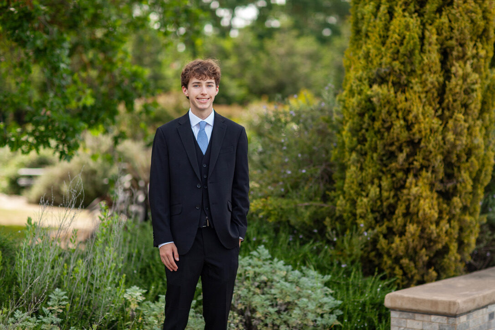

Hi, I'm James Runner, a photographer based in [City, State].
I photograph weddings, portraits, and landscapes in natural light, with a calm and honest eye.
Selected work
A few of my favorite frames.
Galleries
Weddings, people, and the places I return to.

Nice to meet you
I'm James, a photographer based in [City, State]. I started photographing [PERSONAL_STORY_DETAIL], and I still love the quiet moment when a frame feels true.
My sessions are relaxed and clear. I'll help when you need direction and leave room for real moments to happen.
Read more about meHave something in mind? Let's talk.
Tell me about your date, your idea, or the place you have in mind.